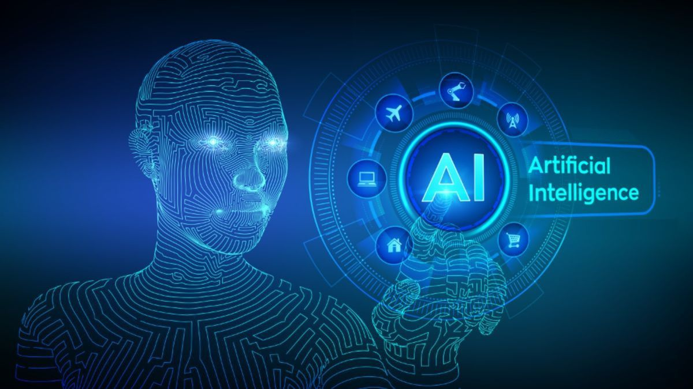

Apa itu Generative AI?
Generative Artificial Intelligence adalah cabang dari AI yang berfokus pada pembuatan konten baru, mulai dari teks, gambar, hingga kode pemrograman. Berbeda dengan AI tradisional yang hanya menganalisis data yang ada, Generative AI menggunakan model bahasa besar (LLM) untuk memahami pola dan menciptakan sesuatu yang orisinal.
"Kecerdasan buatan bukan tentang menggantikan manusia, melainkan memperkuat kapabilitas manusia untuk memecahkan masalah yang lebih kompleks."
Komponen Utama AI Modern
1. Machine Learning: Mesin belajar dari data tanpa diprogram secara eksplisit.
2. Neural Networks: Struktur algoritma yang meniru cara kerja otak manusia.
3. Deep Learning: Evolusi ML yang menggunakan banyak lapisan saraf untuk mengenali pola rumit.